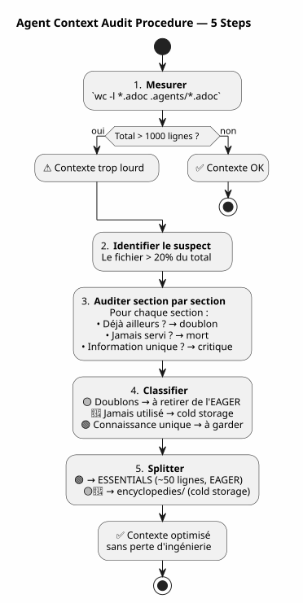

Agent Context Audit: When Your Own Governance Becomes the Problem — and How to Fix It Without Losing Anything
Published on 27 April 2026
- The scene: session 051, something’s off
- The audit: dissecting the 627 lines
- The fear of losing the engineering
- The solution: encyclopedic split
- The content of the file ESSENTIALS
- The result: -50% EAGER context
- Why is the folder called `encyclopedies/
- The logical continuation of the series
- What I would have done differently
- The guide to audit your own context
- A living governance
- Links
You have spent weeks building an immaculate agent governance. Eager/Lazy, end‑of‑session procedure, rotating backups. The system is running. Then one day, the agent becomes slow. Responses are diluted. You measure: 1414 lines loaded automatically. And the worst part is that the culprit is not the code, nor the backlog, nor the session archives. The culprit is the file documenting your method.
- tic
-
[]
The scene: session 051, something’s off
April 30, 2026, 4:00 PM. I am in the middle of a session on`magic-stick`, mon projet de build d’ISO Linux live. L’agent Opencode a chargé automatiquement mes fichiers Eager comme d’habitude —AGENT.adoc, PROMPT_REPRISE.adoc, .agents/INDEX.adoc. Everything is normal.
Except that the responses are weak. The agent takes two more seconds to reason. He forgets a detail he had right in front of him three messages earlier. It’s not a crash, not an error — it’s a slow degradation, the kind you don’t notice right away.
I had already experienced that in session 048, when I discovered that the governance files weighed 5200 lines cumulatively. I then conceptualized the Hot/Warm/Cold mechanism with its sliding window of 10 sessions, its identical cold waves, its two-trigger sensor. The problem was solved. In theory.
But now we are at session 051. The backup rotation did take place — the EAGER files went from 2087 to 500 lines. Yet the context remains heavy. Something eludes me.
I open a terminal and I type:
wc -l AGENT.adoc AGENT_MODUS_OPERANDI.adoc PROMPT_REPRISE.adoc \
.agents/INDEX.adoc .agents/SESSIONS_HISTORY.adoc \
.agents/archives/COMPLETED_TASKS_ARCHIVE_2026-04.adoc 287 AGENT.adoc
627 AGENT_MODUS_OPERANDI.adoc
51 PROMPT_REPRISE.adoc
218 .agents/INDEX.adoc
18 .agents/SESSIONS_HISTORY.adoc
213 .agents/archives/COMPLETED_TASKS_ARCHIVE_2026-04.adoc
1414 total1414 lines. The backup rotation trimmed well in INDEX, SESSIONS_HISTORY and COMPLETED_TASKS — they are clean. But there is an elephant in the room that I hadn’t seen:627 linesin a single file.AGENT_MODUS_OPERANDI.adoc.
This file, it’s the one I wrote in session 1 to document the Eager/Lazy strategy. It’s the manual of the method. And it has become, by itself, 44% of the EAGER context.
Failed to generate image: PlantUML preprocessing failed: [From <input> (line 9) ] @startuml skinparam backgroundColor #FEFEFE title EAGER Context — 1414 lines rectangle "AGENT_MODUS_OPERANDI **627 lines (44%)**" as MOD #FFCDD2 rectangle "AGENT.adoc\n287 lines (20%)" as AG #BBDEFB rectangle "INDEX.adoc 218 lines (15%)" as IDX #C8E6C9 ^^^^^ Syntax Error? (Assumed diagram type: activity) @startuml skinparam backgroundColor #FEFEFE title EAGER Context — 1414 lines rectangle "AGENT_MODUS_OPERANDI **627 lines (44%)**" as MOD #FFCDD2 rectangle "AGENT.adoc\n287 lines (20%)" as AG #BBDEFB rectangle "INDEX.adoc 218 lines (15%)" as IDX #C8E6C9 rectangle "COMPLETED_TASKS\n213 lines (15%)" as ARC #FFF9C4 rectangle "PROMPT_REPRISE 51 lines (4%)" as PRO #E1BEE7 rectangle "SESSIONS_HISTORY 18 lines (1%)" as HIS #FFE0B2 note bottom of MOD Le fichier qui documente la méthode est devenu le plus gros poste de dépense end note @enduml
The irony is total. The file designed to save context has become the main consumer of context. It’s as if your car’s user manual weighed more than the engine.
The audit: dissecting the 627 lines
I decide to do a section-by-section audit. Not to delete — but to understand what deserves to be in EAGER and what could live elsewhere without loss of knowledge.
Here is the exact structure of`AGENT_MODUS_OPERANDI.adoc`and what I find there:
Section |
Lines |
Content |
Already present in… |
P1 — Overview |
64 |
Problem solved, fundamental principles, dashboard vs manual analogy |
— |
P2 — Structure of files |
97 |
Tree structure, loading policy, when to load what |
— |
P3 — Absolute rules |
34 |
Git forbidden, destructive commands forbidden, secrets forbidden |
|
P4 — Session life cycle |
133 |
Opening template, work rules, 6 steps end of session, checklist |
|
P5 — Metrics and thresholds |
49 |
Ideal session (15-30 min, 1-3 files), warning signs |
— |
P6 — Types of sessions |
72 |
Detection table, proposal format, exceptions |
— |
P7 — Continuous improvement |
39 |
Tracking metrics, weekly review |
— |
P8 — Startup checklist |
13 |
Bootstrap new project |
— |
P9 — References |
30 |
Reference files, external resources |
|
Annexes A+B |
42 |
Glossary, version history |
— |
The verdict is final:
-
Complete duplicates(167 lines) : P3, P4, P9 — everything is already in`AGENT.adoc` ou
INDEX.adoc, often word for word -
Never consulted in practice(215 lines): P5, P6, P7, P8, Annexes — meta‑governance that has never been used in any session
-
Unique knowledge(161 lines) : P1 and P2 — the LAZY/EAGER vocabulary, the analogy, the loading policy
On 627 lines,382 are noise. And these 382 lines are loaded at each session start, consumed by the agent, diluting his attention even before I say hello.
Failed to generate image: PlantUML preprocessing failed: [From <input> (line 8) ]
@startuml
skinparam backgroundColor #FEFEFE
skinparam defaultTextAlignment center
title Audit of AGENT_MODUS_OPERANDI.adoc — 627 lines
left to right direction
rectangle "�🟡 **Duplicates**
^^^^^
Syntax Error? (Assumed diagram type: class)
@startuml
skinparam backgroundColor #FEFEFE
skinparam defaultTextAlignment center
title Audit of AGENT_MODUS_OPERANDI.adoc — 627 lines
left to right direction
rectangle "�🟡 **Duplicates**
167 lines (27%)" as DUP #FFF9C4 {
card "P3 — Absolute rules
(34 lines)" as D1
card "P4 — Life cycle
(133 lines)" as D2
card "P9 — References
(30 lines)" as D3
}
rectangle "🔴 **Never consulted**
215 lines (34%)" as JAM #FFCDD2 {
card "P5 — Metrics
(49 lines)" as J1
card "P6 — Detection\n(72 lines)" as J2
card "P7 — Improvement
(39 lines)" as J3
card "P8 — Bootstrap
(13 lines)" as J4
card "Annexes — Glossary
(42 lines)" as J5
}
rectangle "🟢 **Unique knowledge**
161 lines (26%)" as UNI #C8E6C9 {
card "P1 — Overview\n(64 lines)" as U1
card "P2 — File structure\n(97 lines)" as U2
}
note bottom of UNI
C'est ÇA qu'il faut garder en EAGER.
Le reste → cold storage.
end note
@enduml
This diagram is the key to everything. The duplicates (yellow) are pure noise — the agent reads them twice, in two different files. The never consulted (red) is dead documentation — written with care, never used. Only the green contains knowledge that the agent cannot find elsewhere.
The fear of losing the engineering
At this point, I have the evidence before me: I must reduce.AGENT_MODUS_OPERANDI.adoc. But I hesitate.
This file, I wrote it by hand. Each section is the result of a lesson learned in a real session. The P3 part was born from a`rm -rf`accidental on`bakery-plugin`that cost me real Firebase tokens. Part P4 is the result of fifteen sessions where I forgot to archive and lost the thread. The 6‑step procedure didn’t come from a book — it came from pain.
Deleting these sections would be throwing away the history of my own engineering. The lessons that produced them, the sessions during which I discovered them, the mistakes I never want to repeat again. This isn’t text — it’s crystallized experience.
This is where I formulate the principle that will guide the solution:
_ Never delete. Always relocate.Knowledge does not need to disappear from the project; it just needs to not be loaded automatically when it is not necessary. _
The solution: encyclopedic split
The model I propose is simple and draws inspiration from how Wikipedia grew: when an article becomes too long, we don’t cut it — we create a detailed article and keep a summary in the main article.
For`AGENT_MODUS_OPERANDI.adoc`, that gives:
-
Extractthe 161 unique knowledge lines (P1 + P2) in a new file`LAZY_EAGER_ESSENTIALS.adoc`— compacted to ~50 lines, strictly EAGER
-
Rename
AGENT_MODUS_OPERANDI.adocen.agents/encyclopedies/LAZY_EAGER_ENCYCLOPEDIE.adoc— the original file of 627 lines, preserved intact, in cold storage -
Never chargele fichier encyclopedia automatically — it’s there for the human, for future distillation, for the agent we will invoke in six months with a better model
Failed to generate image: PlantUML preprocessing failed: [From <input> (line 8) ]
@startuml
skinparam backgroundColor #FEFEFE
skinparam defaultTextAlignment center
title Encyclopedic Split — AGENT_MODUS_OPERANDI
left to right direction
rectangle "**AGENT_MODUS_OPERANDI.adoc**
^^^^^
Syntax Error? (Assumed diagram type: class)
@startuml
skinparam backgroundColor #FEFEFE
skinparam defaultTextAlignment center
title Encyclopedic Split — AGENT_MODUS_OPERANDI
left to right direction
rectangle "**AGENT_MODUS_OPERANDI.adoc**
627 lines
(before split)" as BEFORE #FFCDD2 {
}
rectangle " " as ARROW1
rectangle " " as ARROW2
rectangle "**LAZY_EAGER_ESSENTIALS.adoc**
**~50 lines — EAGER**" as ESS #C8E6C9 {
card "Condensed P1\n(15 lines)" as E1
card "P2 condensed
(35 lines)" as E2
}
rectangle "**.agents/encyclopedies/**
**LAZY_EAGER_ENCYCLOPEDIE.adoc**
627 lines — COLD" as ENC #BBDEFB {
card "P1 to Appendices
(complete, intact)" as C1
}
BEFORE -[#4CAF50]-> ESS : "Extraction of\ncritical knowledge"
BEFORE -[#2196F3]-> ENC : "Complete preservation
of engineering"
note bottom of ESS
Chargé automatiquement
en début de session
→ L'agent comprend le vocabulaire
end note
note bottom of ENC
Jamais chargé automatiquement
Consultable par l'humain
Matériau brut pour distillation future
end note
@enduml
The name`encyclopedies/`It’s not trivial. An encyclopedia is not an archive file — it’s an organized collection of knowledge, consultable but not portable. You don’t read Encyclopædia Universalis on the subway. You keep it in the library, and you go there when you have a specific question.
This is exactly the role of this folder: a cold, structured, exhaustive reference library — that the agent does not touch automatically.
The content of the file ESSENTIALS
Here is what the new file actually looks like`LAZY_EAGER_ESSENTIALS.adoc`, extracted and compacted from P1 and P2 :
= Stratégie LAZY/EAGER — Principes Essentiels
[abstract]
Ce fichier définit la stratégie de gestion du contexte agent.
Chargé automatiquement (EAGER) en début de session.
== Principes
|===
| EAGER | LAZY
| Tableau de bord | Manuel du propriétaire
| Chargé automatiquement | Chargé sur demande
| <= 100 lignes, <= 10k tokens | Illimité, détaillé
| Règles absolues, mission courante | Archives, historique, références
|===
== Politique de Chargement
|===
| Fichier | Type | Quand charger
| PROMPT_REPRISE.adoc | EAGER | Début session (auto)
| *_ESSENTIALS.adoc | EAGER | Début session si EPIC active
| .agents/INDEX.adoc | EAGER | Début session (auto)
| *_REFERENCE.adoc | LAZY | Sur besoin (détails architecture)
| .agents/sessions/N-*.adoc | LAZY | Sur demande (détails session)
| .agents/encyclopedies/*.adoc | COLD | Jamais auto (humain seulement)
|===
== Comment l'Agent Sait Quoi Charger
Début session → PROMPT_REPRISE + INDEX + ESSENTIALS actifs.
Besoin de détails → charger les *_REFERENCE et sessions/ en LAZY.
Connaissance froide → encyclopedies/, jamais automatique.Fifty lines. That’s all the agent needs to understand the mechanics. Everything else — the lesson history, detailed analogies, step‑by‑step procedures, annexes — lives in the encyclopedia.
And the most important:Nothing has been removed. The 627 engineering lines are still there, in`.agents/encyclopedies/LAZY_EAGER_ENCYCLOPEDIE.adoc`. They are just stored in the library rather than on the countertop.
The result: -50% EAGER context
Before the split :
287 AGENT.adoc
627 AGENT_MODUS_OPERANDI.adoc
51 PROMPT_REPRISE.adoc
218 .agents/INDEX.adoc
18 .agents/SESSIONS_HISTORY.adoc
213 .agents/archives/COMPLETED_TASKS_ARCHIVE_2026-04.adoc
1414 totalAfter the split:
287 AGENT.adoc
50 LAZY_EAGER_ESSENTIALS.adoc ← remplace 627 lignes
51 PROMPT_REPRISE.adoc
218 .agents/INDEX.adoc
18 .agents/SESSIONS_HISTORY.adoc
213 .agents/archives/COMPLETED_TASKS_ARCHIVE_2026-04.adoc
837 total ← -41%Failed to generate image: PlantUML preprocessing failed: [From <input> (line 7) ] @startuml skinparam backgroundColor #FEFEFE title EAGER context after encyclopedic split — 837 lines (-41%) rectangle "AGENT.adoc\n287 lines (34%)" as AG #BBDEFB rectangle "INDEX.adoc 218 lines (26%)" as IDX #C8E6C9 ^^^^^ Syntax Error? (Assumed diagram type: activity) @startuml skinparam backgroundColor #FEFEFE title EAGER context after encyclopedic split — 837 lines (-41%) rectangle "AGENT.adoc\n287 lines (34%)" as AG #BBDEFB rectangle "INDEX.adoc 218 lines (26%)" as IDX #C8E6C9 rectangle "COMPLETED_TASKS\n213 lines (25%)" as ARC #FFF9C4 rectangle "PROMPT_REPRISE\n51 lines (6%)" as PRO #E1BEE7 rectangle "ESSENTIALS\n50 lines (6%)" as ESS #A5D6A7 rectangle "SESSIONS_HISTORY 18 lines (2%)" as HIS #FFE0B2 note bottom of ESS De 627 → 50 lignes 577 lignes d'ingénierie préservées en cold storage Rien de perdu. Tout de relocalisé. end note @enduml
The biggest consumer (AGENT_MODUS_OPERANDI, 627 lines) has been replaced by a 50‑line file. The gain is immediate: 577 lines of context freed up. The agent breathes.
And in`.agents/encyclopedies/`, the original file of 627 lines waits. Intact. With all its sections — including those that are duplicates, including those that have never been used. Because one day, a better model or a human data scientist will want to cross these angles, these assumed redundancies, these lessons learned. And that day, the raw material will be there.
Why is the folder called `encyclopedies/
Choosing the name is not cosmetic. It encodes the philosophy of the mechanism.
An archive (archives/) contains historical data organized chronologically — like the monthly COMPLETED_TASKS. A backup (backup/) is a timestamped snapshot — a backup of a past state.
An encyclopedia is something else. It is a collection of thematic knowledge, structured by subject, exhaustive but non-linear. One does not read an encyclopedia from beginning to end. One dives into it to answer a specific question.
That is exactly the contract of this case:
File |
Role |
Access |
Granularity |
|
Historical data (tasks completed per month) |
LAZY, structured |
Chronological |
|
Cold snapshots (waves of 10 sessions) |
COLD, full copy |
Chronological |
|
Exhaustive thematic knowledge (methodology, patterns) |
COLD, never auto |
Thematic |
This distinction avoids the catch-all. Each file knows where it should live according to what it contains, not according to when it was created.
The logical continuation of the series
If you have read the first two articles, here is how the three pieces fit together:
Failed to generate image: PlantUML preprocessing failed: [From <input> (line 9) ]
@startuml
skinparam backgroundColor #FEFEFE
skinparam defaultTextAlignment center
skinparam wrapWidth 220
title Agent Governance Trilogy
left to right direction
package "📖 **Article 0108**
^^^^^
Syntax Error? (Assumed diagram type: class)
@startuml
skinparam backgroundColor #FEFEFE
skinparam defaultTextAlignment center
skinparam wrapWidth 220
title Agent Governance Trilogy
left to right direction
package "📖 **Article 0108**
Strategy Eager/Lazy" as A1 #E8F5E9 {
card "Agent memory\nbetween sessions" as M1
card "Files EAGER\n(auto-loaded)" as M2
card "Files LAZY\n(on request)" as M3
card "Procedure 6 steps" as M4
}
package "🧊 **Article 0110**
Hot/Warm/Cold Mechanism" as A2 #FFF9C4 {
card "Aging
of the context" as V1
card "Sliding window
10 sessions" as V2
card "Cold wave
identical" as V3
card "Sensor with two triggers" as V4
}
package "🔍 **Article 0111**\nAudit + Encyclopedic Solution" as A3 #BBDEFB {
card "Audit of files
EAGER" as E1
card "Identification
of waste" as E2
card "Split
ESSENTIALS/encyclopedia" as E3
card "Preservation
of engineering" as E4
}
A1 --> A2 : "Memory grows
→ we need an aging mechanism"
A2 --> A3 : "Aging is not enough
→ we must audit what
deserves to be in EAGER"
note bottom of A3
✅ Les trois couches sont en place
sur 6 projets actifs
end note
@enduml
-
0108Responds to: “How to give memory to the agent between two sessions?”
-
0110responds to: "How to prevent this memory from suffocating the agent?
-
0111 responds to: « And if the problem isn’t the size of the archives, but what we have chosen to put in EAGER?
The first article built the structure. The second added the aging mechanism. The third audits the content — and discovers that the methodology itself has become the problem.
What I would have done differently
In hindsight, I see the initial design error.`AGENT_MODUS_OPERANDI.adoc`was created as a single document — a manifesto. That was the right approach to formalize thinking. But once thinking had been formalized, the document should have been split immediately: the essentials in EAGER, the exhaustive in cold.
I didn’t do it because I was proud of the document. 627 lines of pure engineering, handwritten, each section the fruit of a lesson session. It was my work. And like any author, I struggled to cut it.
The lesson:Just because a document is good doesn’t mean it has to be loaded automatically.. The quality of the content is unrelated to its relevance for the agent’s immediate context.
Today, the rule is simple: any document over 100 lines in the EAGER context is a suspect. It deserves an audit. Not a conviction — an audit. And the question is never "should we delete it?" but "should we load it every session?
The guide to audit your own context
If you have followed the first two articles and set up your own Eager/Lazy governance, here is a five‑step audit procedure:
-
Measure:`wc -l`on all your EAGER files. The total should be under 1000 lines.
-
Identify the biggestThe file that weighs more than 20% of the total is suspect number one.
-
Audit section by section: for each section, ask yourself: 'Is this information already elsewhere? Has the agent already read it in another file? Has it been used in the last 5 sessions?'
-
Classifierduplicate, never used, unique knowledge.
-
Split or relocate: what is unique and critical → ESSENTIALS compacted. Everything else →
encyclopedies/.

This procedure takes 15 minutes. On a project of 50 sessions, it saves hundreds of tokens per future session. The ROI is immediate.
A living governance
What this series of three articles taught me is that agent governance is not a finished product. It’s aliving organism. She grows with the project. She catches growth-related diseases. She requires regular check-ups.
Session 048 revealed that the archives are swelling. Session 051 revealed that the methodology itself is swelling. Session 060 will likely reveal something else. That’s normal. That’s healthy. A governance that never questions itself is a dead governance.
The three mechanisms put in place — Eager/Lazy, Hot/Warm/Cold, encyclopedic split — form a layered defense system against context saturation. None is sufficient on its own. Together, they complement each other:
-
Eager/LazyStructure the information by availability
-
Hot/Warm/Coldstructure the information by freshness
-
Encyclopedic auditstructure the information by density
Failed to generate image: PlantUML preprocessing failed: [From <input> (line 6) ] @startuml skinparam backgroundColor #FEFEFE skinparam nodeBackgroundColor #E3F2FD title Defense in Depth against Context Saturation node "**Agent Context** ^^^^^ Syntax Error? (Assumed diagram type: sequence) @startuml skinparam backgroundColor #FEFEFE skinparam nodeBackgroundColor #E3F2FD title Defense in Depth against Context Saturation node "**Agent Context** ~800 lines healthy" as CTX #C8E6C9 node "Layer 1\n**EAGER / LAZY**" as C1 #BBDEFB node "Layer 2 **HOT / WARM / COLD**" as C2 #BBDEFB node "Layer 3 **ESSENTIALS / ENCYCLOPEDIA**" as C3 #BBDEFB CTX --> C1 : "Structure by **availability**" CTX --> C2 : "Structure by\n**freshness**" CTX --> C3 : "Structure by **density**" note bottom of C3 Les trois couches sont nécessaires. Aucune n'est suffisante seule. end note @enduml
With these three layers, the agent context on`magic-stick`went from 2087 lines (before any optimization) to about 800 lines — a division by 2.6. Without having lost a single line of documentation, a single session archive, a single lesson learned.
Everything is there. Just better organized.
Links
-
Article 0108 — Strategy Eager/Lazy :Governing an AI Agent with AsciiDoc
-
Article 0110 — Hot/Warm/Cold Mechanism:Sliding Window and Cold Wave
-
My site: https://cheroliv.com
-
The project`magic-stick`: https://github.com/cheroliv/magic-stick
Knowledge does not have to disappear; it merely needs to stay unloaded when it is not necessary.